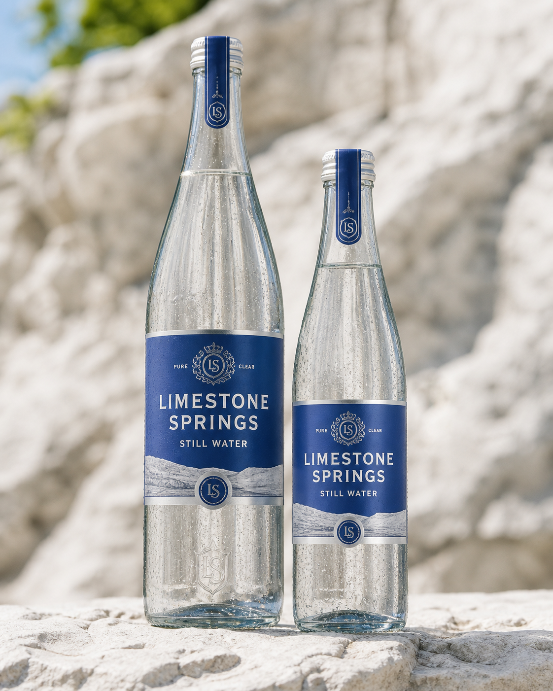

Protected extraction
Water permits, source health and watershed protection are treated as strategic operating risks. Extraction remains below independently assessed recharge capacity.

Kentucky limestone filtration is the connection to bourbon country. Our water is not drawn from a barrel or the Hatfield distillery pipe.
Water permits, source health and watershed protection are treated as strategic operating risks. Extraction remains below independently assessed recharge capacity.
The Frankfort plant runs glass, can and PET lines with blending rooms, laboratory, warehouse and regional distribution.
Most international product ships finished. Selected distant markets use audited packing where shipping water would be economically or environmentally perverse.